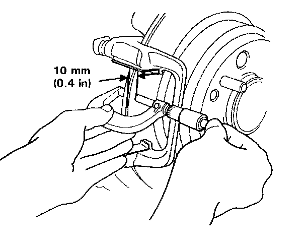

Rear
Thickness and Parallelism Inspection1. Support the rear of the car on safety stands and remove the rear wheels.
2. Remove the rear brake caliper. Service and Repair

3. Using a micrometer, measure the brake disc thick- ness at eight points, approximately 45° apart and 10 mm (0.4 in) in from the outer edge of the disc.
Brake Disc Thickness:
Standard: 9.0 mm (0.35 in)
Brake Disc Parallelism: 0.015 mm (0.0006 in) max.
NOTE: This is the maximum allowable difference between any thickness measurements.
4. If the disc is beyond the limit for parallelism, refinish the disc.
Max. Refinishing Limit: 7.5 mm (0.30 in)